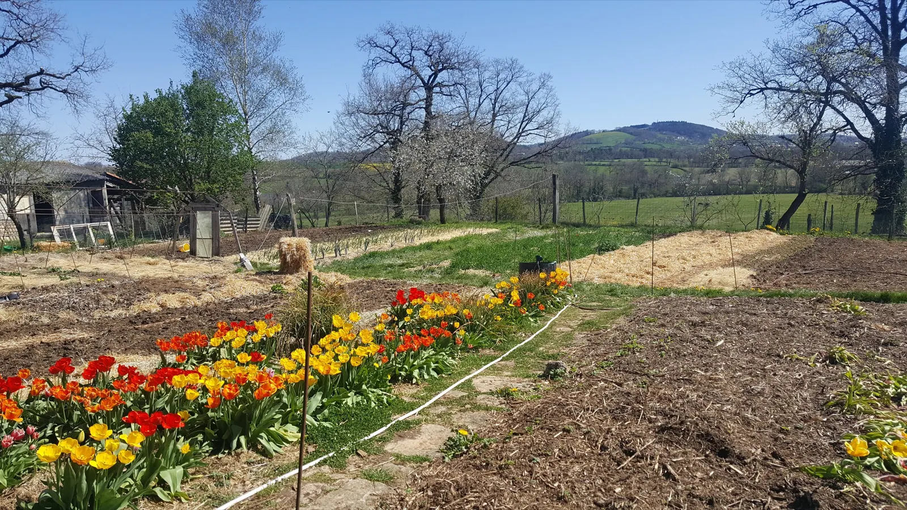
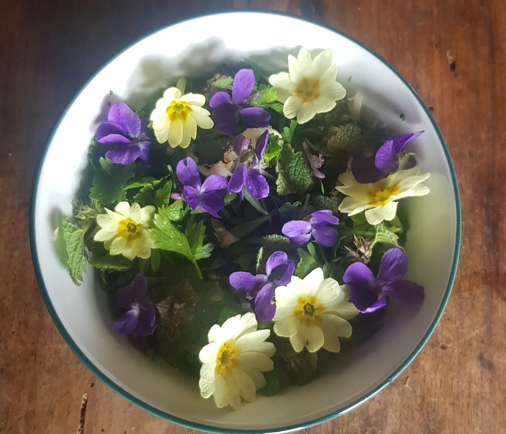
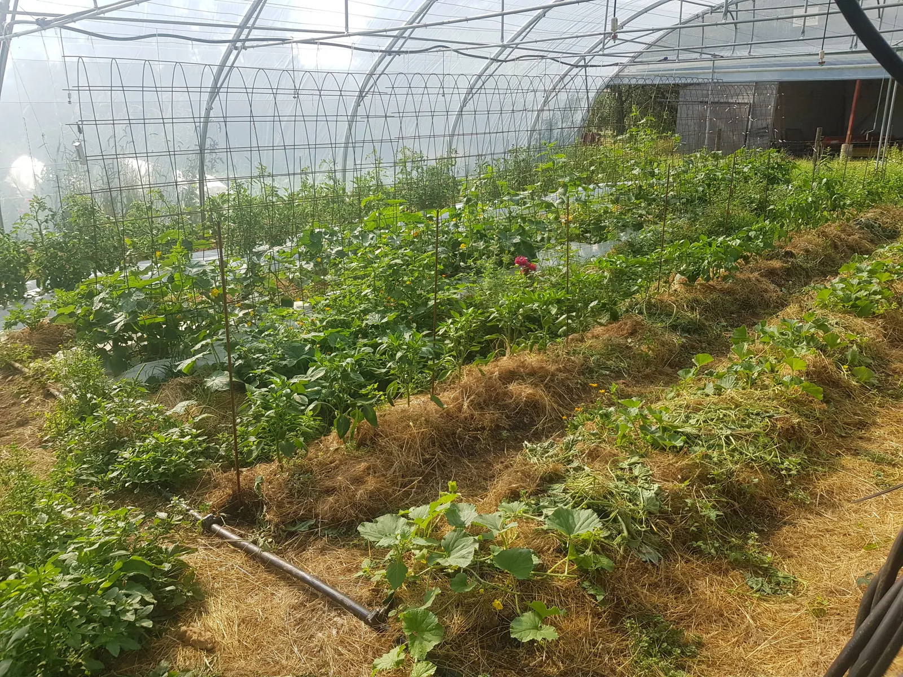
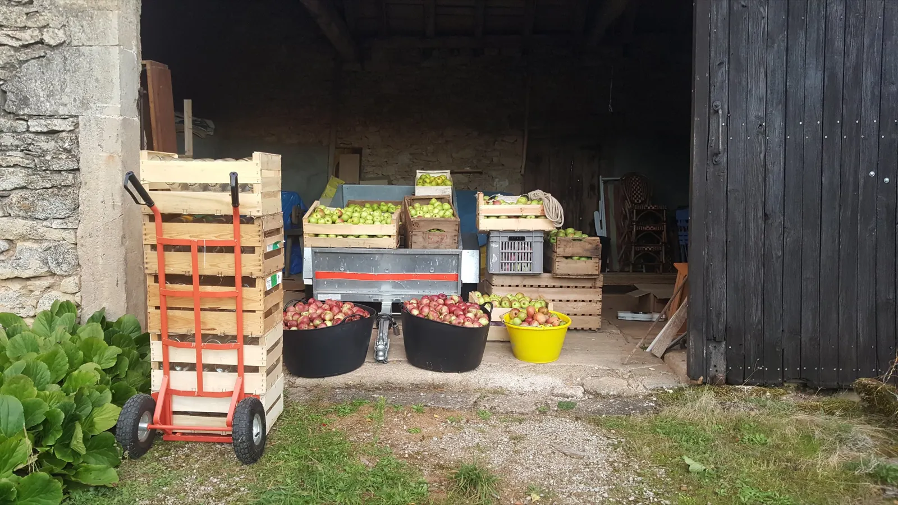
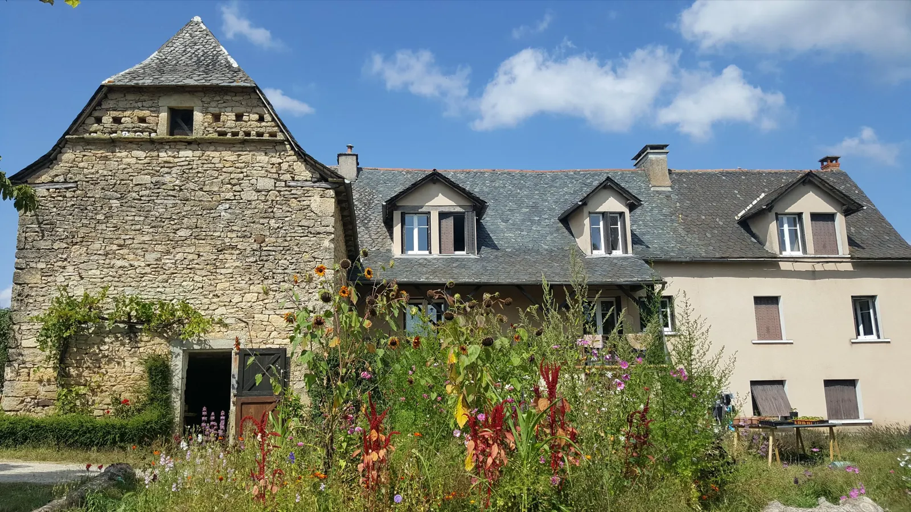
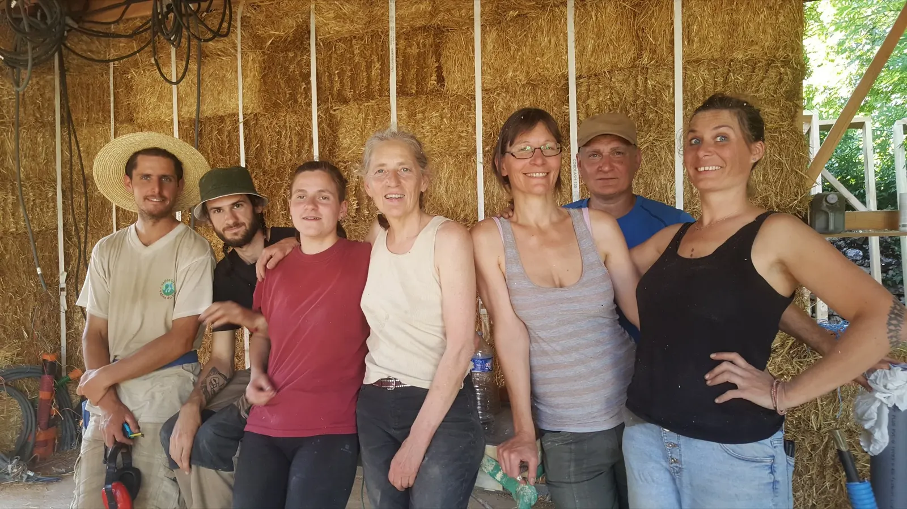
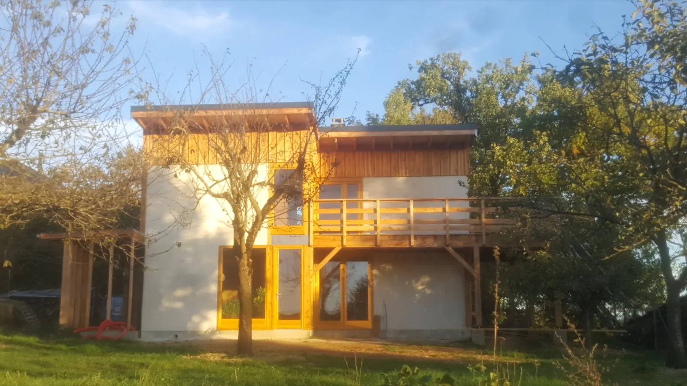
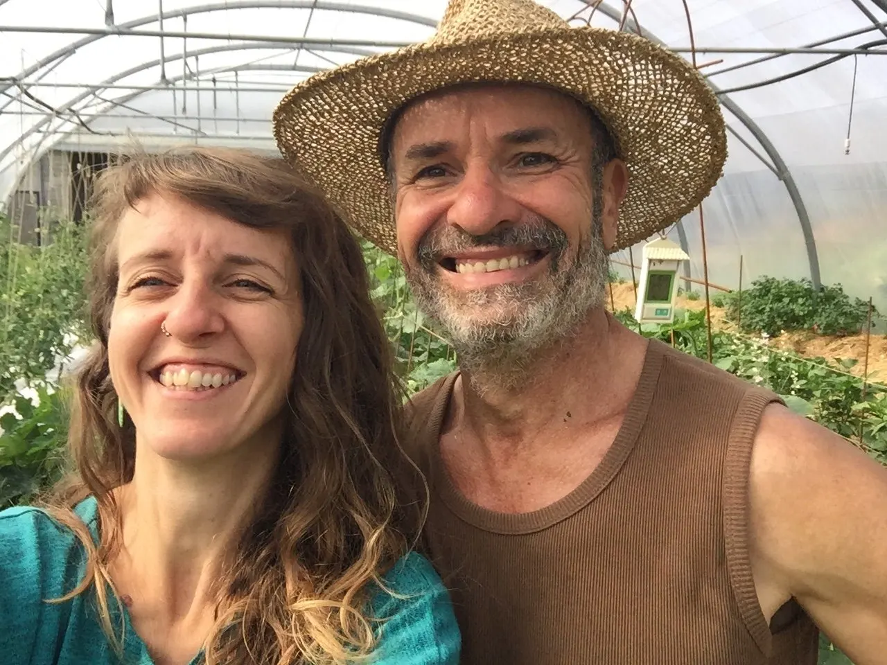

Bienvenue dans nos Jardins Vivants.
Une ferme maraîchère bio, un espace familial de vie, d'accueil et de partage, sur près de deux hectares au cœur d'une authentique ferme aveyronnaise de 1809, à Roussennac.


- Bioferme certifiée en Agriculture Biologique
- Près de 2 hade jardins, poulailler mobile, vergers
- Ferme de 1809une authentique ferme aveyronnaise
- Depuis 2020installés à Roussennac
- Accueil Paysanéco-gîte classé meublé de tourisme

Aller plus loin que le label bio.
Nous privilégions une démarche qui favorise la vie des sols, des insectes, des vers de terre et de tous les micro-organismes, en s'inspirant du maraîchage sur sol vivant et du bio-intensif.
Nous minimisons le travail mécanique de nos sols, cultivons des engrais verts et des couverts permanents, et apportons de la matière organique fraîche pour faire pousser des légumes plus riches en nutriments et en goût.
- Nos jardins maraîchers
- Notre poulailler mobile
- Nos vergers
Nos légumes et produits bio, en vente directe.
Retrouvez nos légumes bio, fruits et conserves à la ferme et sur les marchés locaux.

Où trouver nos produits
- À la ferme, le vendredi de 18 h à 19 hCommandez votre panier et venez le récupérer. Pour avoir la liste de légumes, contactez-nous.
- Au marché de MontbazensLes mercredis matin, de mai à décembre.
- Sur les marchés gourmands festifs, le soirMarchés gourmands de Bournazel, marché des producteurs de Roussennac : venez déguster nos assiettes végétales.
- Chez nos restaurateurs préférés du momentet en magasins bio.
Nos produits
Les douceurs potagèressucré
Compote de coing, gelée de coing au safran, chutney.
Les saveurs maraîchèressalé
Confidou (sauce de tomates cerises aigre-douce), coulis de tomates safrané, Tarticourgette, Patapéro (pesto, lentilles et cumin toasté), Navetine.
Les folies vergèresboissons
Jus de pomme, sirop de citronnelle, sirop de Noël, sirop de safran.

Notre éco-gîte, de 1 à 6 personnes.
Séjournez en plein cœur de nos Jardins Vivants. Classé meublé de tourisme deux étoiles et labellisé Accueil Paysan, 3 chambres, avec grand jardin dans un hameau calme.
- Petite formule55 à 65 €la nuitéePour 1 ou 2 personnes : le rez-de-chaussée avec la chambre de plain-pied.
- Gîte entier90 à 105 €la nuitéeJusqu'à 6 personnes, 3 chambres, lit parapluie ou lit d'une personne en plus possible.
Votre éco-gîte est dans l'aile sud-est du corps de ferme, avec son entrée de plain-pied sur le jardin, indépendante.
À l'extrémité d'un hameau familial calme, à proximité d'un haras, en bout de route non passante qui se transforme en chemin de promenade, au milieu d'un paysage bocager et vallonné menant au château de Bournazel, à l'étang du Roudillou et au village de Roussennac.
Participez à la vie et au développement des Jardins.
Nous avons débuté en avril 2022 la construction de notre maison en paille porteuse, de type « Nebraska ».
Co-construite avec l'équipe des Batifrères, Ecodomus et en chantiers participatifs, cette construction est avant tout une belle aventure humaine, riche de rencontres et d'entraide.
Et les cours et ateliers de yoga Iyengar, avec Camille.



Qui sommes-nous ?
Nous sommes Camille et Daniel. Nous nous sommes installés en 2020 en Aveyron pour créer un lieu en cohérence avec nos convictions, et l'aménager petit à petit selon nos expérimentations et nos rencontres.
Camille, installée officiellement comme maraîchère depuis 2022, cherche l'équilibre entre le yoga et la terre. Daniel a toujours cultivé son jardin : il rencontre la permaculture en 2001 et l'expérimente depuis dans des jardins vivriers en Drôme, en Camargue et en Aveyron.
- Produire des aliments sains, frais et savoureux
- S'impliquer dans le territoire, commercialiser en circuit court
- Proposer un lieu de vacances éthique, qui soutient l'agriculture paysanne
- Créer un espace locatif convivial
- Favoriser la biodiversité et aggrader les sols
- Expérimenter, échanger, construire, partager des alternatives de vie
Et ne pas oublier de respirer.
Contactez-nous.
Pour la liste de légumes, un panier à retirer le vendredi ou une question sur le gîte, appelez-nous ou écrivez-nous.
- Adresse
- 375 route de la Margasse
12220 Roussennac - Téléphone
- 06 34 07 53 82
- Retrait des paniers
- À la ferme, le vendredi de 18 h à 19 h